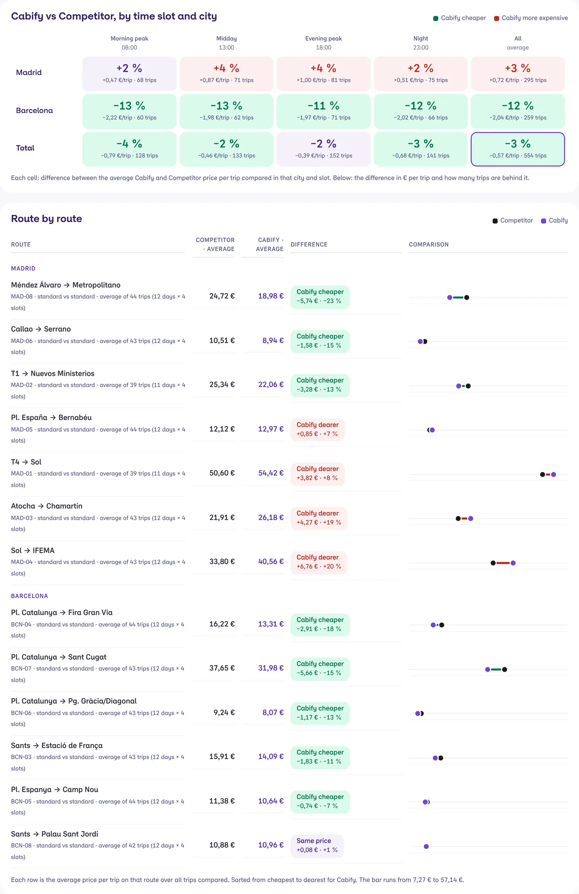
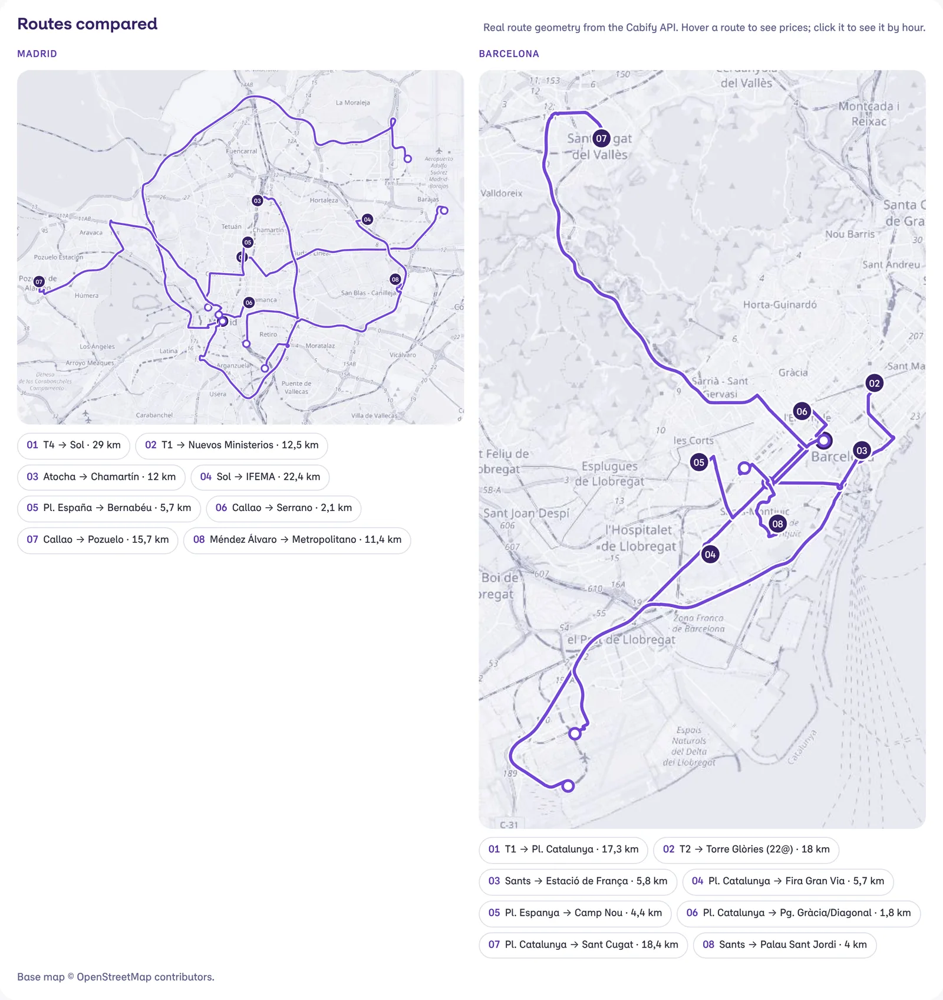
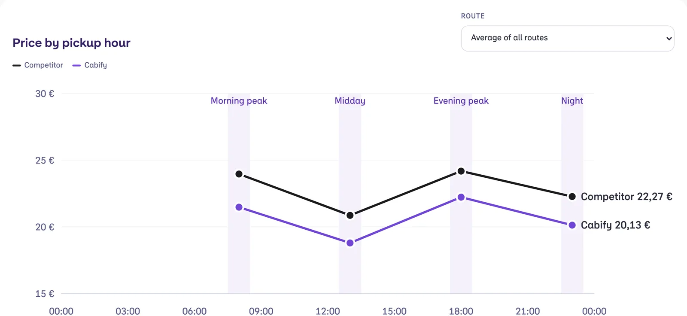

Case study · Cabify Spain · Oct 2026
Booking Benchmark · Cabify vs Competitor
How much does it cost to book the same trip, for the same pickup time, on Cabify and on its main competitor? Operations leadership wanted an answer that was not a one-off sample. Every day the system prices a next-day booking on 16 routes in Madrid and Barcelona at four pickup times, on both apps, stores every price and shows the gap by city, time slot and route.
The question
Price comparisons between ride-hailing apps are usually a few screenshots taken on one afternoon. They answer the wrong question twice: they compare rides for now instead of bookings, and they say nothing about the hour, the route or the product. The request was specific: bookings, Madrid and Barcelona, peak and off-peak, and a weekend with events next to one without.
The first version taught me why the details matter. I had configured the Cabify side as a ride for now while the other side was a booking, and the gap it showed was meaningless. I flagged it the same day, before anyone used the numbers, and rebuilt the Cabify side as a real booking for the same pickup time.
How it works
- A plan, not a loop. Each day has 64 tasks per app: 16 routes by 4 pickup slots. A scheduler wakes every 10 minutes and runs what is due. Each query is launched at the pickup hour, give or take an hour, the day before, so every price is a booking made about 24 hours ahead.
- The competitor side. All the products offered on the route are recorded at list price, without the promotions of the account used. The capture is polite on purpose: at most ten queries an hour, at least four minutes apart, and it pauses itself if anything looks wrong.
- The Cabify side. An n8n flow asks for the estimate of the same route at the same pickup time, so both prices describe the same booking.
- Storage. PostgreSQL keeps one row per product and query, the plan of tasks and every run with its error. An analysis view feeds the export, and the dashboard is rebuilt from it with one command.
Comparing like with like
A gap between a premium product and a standard one is not a price gap. Each product is compared only with its equivalent: standard with standard, comfort with comfort, van with group, kids with kids, electric with electric, accessible with accessible, and taxi with taxi in Barcelona. Where Cabify has a local version (the airport product at the airport terminals, a stadium product at the stadium) that is the one used. Products with no equivalent are listed apart and never averaged in.
- Only common trips. With this switch on, every column uses exactly the same route, day and slot, so a gap cannot come from different samples.
- Equal means equal. A difference within 2 % is shown as the same price.
- Known gaps are said out loud. Two Barcelona airport routes are excluded because one side does not offer a booking from there, and the page says so.
The dashboard
The dashboard opens with one sentence: how much more or less Cabify costs, on which trips. Then the gap by city and slot, route by route, the evolution day by day, a free comparator, the routes on a map and the health of the capture. The screenshots below are the real dashboard, translated, with synthetic prices: the real results are internal.



Knowing it is still running
A benchmark that silently stops is worse than none, because the last numbers keep looking current. The capture tab shows, per day and per app, the plan, the successes, the failures, the skipped and the pending tasks, and the last queries with their status. In the first ten days it logged 1,330 successful queries and 8,840 prices.
What I learned
- Define the unit before the chart: here it is one route, one day and one pickup slot, priced on both sides at the same moment.
- Fair comparison is mostly about what you leave out, and about saying so on the page.
- Ship a prototype early and let the people who read it decide the routes, the slots and the products.
Prices on this page are synthetic. The routes are real; the results stay internal.